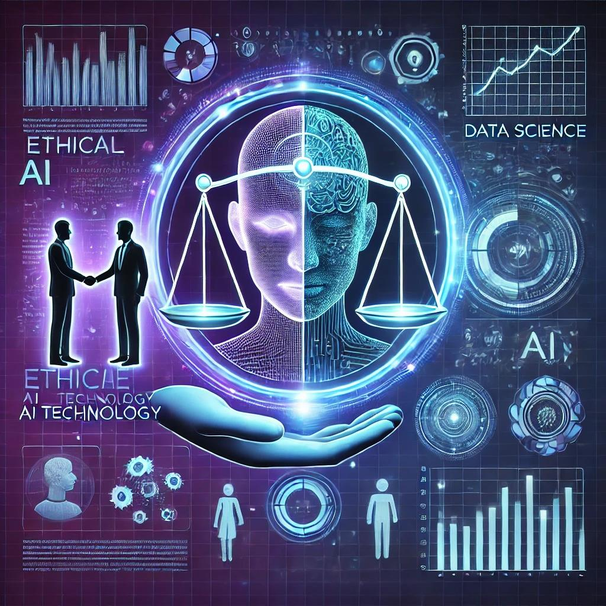
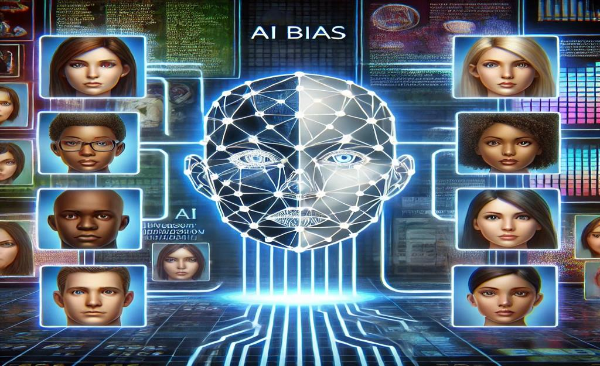
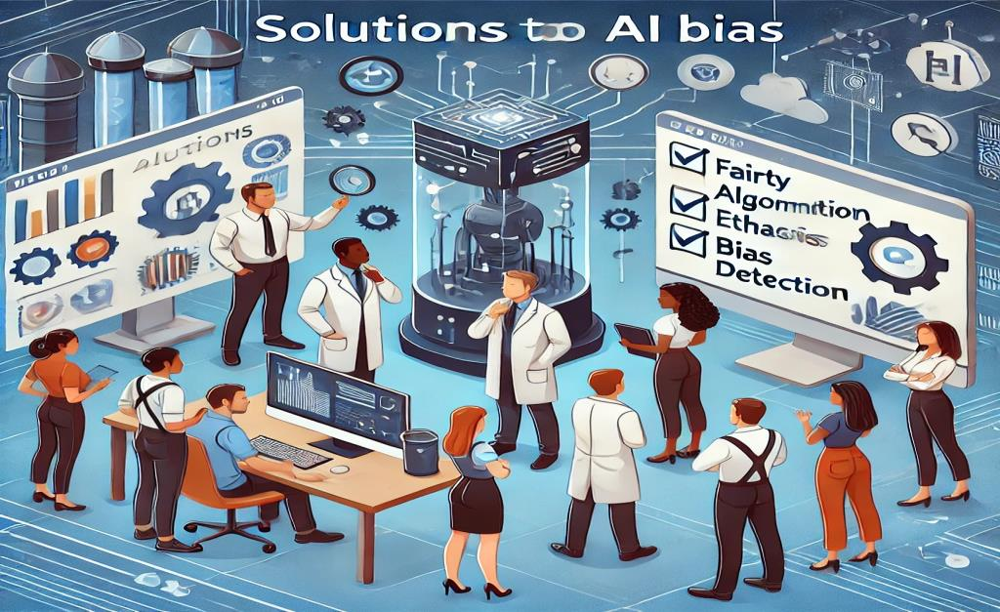
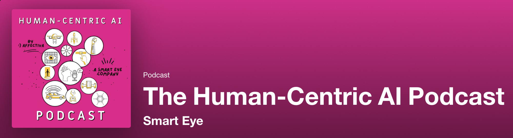

ETHICAL AI
By Sarah Petrov, WeiYin Chen, Jintong Feng, Kendall Luo, Thyme Chanpayom, Fatoumata Ndiaye, and
Delina Haile

Ethical AI and Bias in Technology
What is AI bias?
- AI bias occurs when algorithms produce unfair outcomes due to biased data or design flaws.
- Can be based on race, gender, socioeconomic status, etc.
Real-World Examples:
- Facial recognition misidentifying people of color.
- Hiring algorithms favoring male candidates.
- AI-generated art excluding diverse representations.
Why It Matters:
- AI is increasingly used in hiring, policing, lending, and healthcare.
- Bias in AI can reinforce discrimination and systemic inequalities.

Solutions & Ethical Considerations
- Diversity in Development: More diverse teams in AI design can reduce bias.
- Transparency & Accountability: Companies should disclose AI decision-making processes.
- Bias Audits & Regulation: Governments and institutions should enforce ethical AI
practices.
What Can We Do?
- Advocate for ethical AI policies.
- Support organizations working on AI fairness (e.g., Algorithmic Justice League).
- Stay informed and critically evaluate AI technologies in daily life.

Diversity Equity: Equity Framing and Environmental Justice
- Centering Marginalized Voices: Ensuring AI addresses diverse needs.
- Environmental Justice: Considering AI’s environmental impact.
- AI and Resource Distribution: Ensuring equitable AI-driven resource allocation.
AI’s Role in Workforce Automation
- Influence policy discussions for responsible AI implementation.
- Ensure access to education and job retraining programs.
Case Study: How Algorithms Rule Our Working Lives
- Hiring models may reinforce biases.
- Lack of AI accountability necessitates ethical guidelines.
Discussion Questions
- Have you noticed bias in AI tools? How did it impact you or others?
- What steps should AI companies take to ensure fairness?
- Should the government regulate AI bias? Why or why not?
- Ideas for local/grassroots social justice projects?
The Human-Centric AI Podcast
